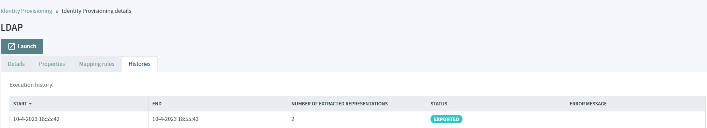

LDAP
Users stored in LDAP repository can be imported into the Identity Server.
Warning
Only OPENLDAP is supported. No Integration tests have been executed against Active Directory.
Before you start, Make sure you have an up and running IdentityServer and IdentityServer website.
In this tutorial, we are going to explain how to import users from OPENLDAP to the Identity Server.
Install OPENLDAP
Before going further, make sure there is Docker installed on your machine.
Open a command prompt, launch an OPENLDAP instance by executing this command line :
docker run -p 389:389 -p 636:636 --name ldap-service -h ldap-service -e LDAP_ORGANISATION="XL" -e LDAP_DOMAIN="xl.com" -e LDAP_ADMIN_PASSWORD="password" -d osixia/openldap:latest
This exposes LDAP over port 389 and LDAPS over port 636.
Create some users
Download and install Apache Directory Studio.
Authenticate as admin with the right login DN :
Login Credentials:
ID : cn=admin,dc=xl,dc=com
Password: password
Under dc=xl,dc=com, create one entry with the object class Organizational Unit (organizationalUnit). Its ou attribute must be equals to people.
This entry will contain the users, who are going to be migrated to the Identity Server.

Under ou=people, add two entries. Both will contain two object classes Organizational Person (organizationalPerson) and person.
First user must have the following attributes and a password equals to password.
| Attribute | Value |
|---|---|
| objectClass | organizationalPerson |
| objectClass | person |
| cn | firstUser |
| sn | firstUser |
| userPassword | password |

Second user must have the following attributes
| Attribute | Value |
|---|---|
| objectClass | organizationalPerson |
| objectClass | person |
| cn | secondUser |
| sn | secondUser |

Now there is an up and running OPENLDAP server with two users, you can use the administration website to import both users.
Extract
Browse the administration UI, navigate to the Identity Provisioning screen and click on LDAP.
In the Properties tab, you can update the attributes of the extraction job
| Field | Description |
|---|---|
| Bind DN | DN of the LDAP admin, which will be used by IdServer to access LDAP Server |
| Bind Credentials | Password of LDAP admin |
| Users DN | Full DN of LDAP tree where users are |
| User object classes | All values of LDAP objectClass attribute for users in LDAP, divided by commas |
| UUID LDAP Attribute | Name of the LDAP attribute, which is used as a unique object identifier (UUID) for objects in LDAP. |
| Modification Date Attribute | Name of the LDAP Attribute, which is used as the modification date for objects in LDAP |
| Batch Size | Number of records |
Warning
If the UUID LDAP Attribute doesn't exist then the FULL DN is used as a unique identifier.
If the Modification Date Attribute doesn't exist then extracted users cannot be versioned. Therefore, even if no modifications have been made on the users since the last extraction, all the users will be extracted in the next execution.
In the scope of this tutorial, default values are correct and should not be updated.
The Mapping Rules tab contains the rules used by IdServer to map properties from OPENLDAP to user attributes / properties.

Before launching the extraction, make sure the Identity Server and the Administration UI are launched.
Click on the Histories tab and click on the Launch button.
Wait some seconds and refresh the page. A new line must be displayed in the table, you can read that 2 records have been extracted from LDAP.

Import
Navigate to the Identity Provisioning screen and click on the Import button.
Wait some seconds and refresh the page. A new line must be displayed in the table, you can read that 2 records have been imported into the Identity Server.
Both users are visible in the Users screen.

Authenticate
Browse the Identity Server and click on the Authenticate button.
Authenticate with the following credentials. You're now authenticated with a user coming from OPENLDAP.
Login : firstUser
Password : password